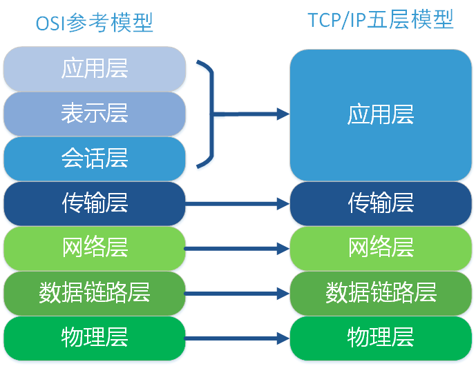

1.物理层：主要定义物理设备标准，如网线的接口类型、光纤的接口类型、各种传输介质的传输速率等。它的主要作用是传输比特流（就是由转化为电流强弱来进行传输到达目的地后在转化为，也就是我们常说的数模转换与模数转换）。这一层的数据叫做比特。
2.数据链路层：定义了如何让格式化数据以进行传输，以及如何让控制对物理介质的访问。这一层通常还提供错误检测和纠正，以确保数据的可靠传输。
3.网络层：在位于不同地理位置的网络中的两个主机系统之间提供连接和路径选择。Internet的发展使得从世界各站点访问信息的用户数大大增加，而网络层正是管理这种连接的层。
4.传输层：定义了一些传输数据的协议和端口号（等），如：（传输控制协议，传输效率低，可靠性强，用于传输可靠性要求高，数据量大的数据），用户数据报协议，与特性恰恰相反，用于传输可靠性要求不高，数据量小的数据，如聊天数据就是通过这种方式传输的）。 主要是将从下层接收的数据进行分段和传输，到达目的地址后再进行重组。常常把这一层数据叫做段。 5.会话层：通过传输层（端口号：传输端口与接收端口）建立数据传输的通路。主要在你的系统之间发起会话或者接受会话请求（设备之间需要互相认识可以是或者是主机名）
6.表示层：可确保一个系统的应用层所发送的信息可以被另一个系统的应用层读取。例如，程序与另一台计算机进行通信，其中一台计算机使用扩展二一十进制交换码（EBCDIC），而另一台则使用美国信息交换标准码（ASCII）来表示相同的字符。如有必要，表示层会通过使用一种通格式来实现多种数据格式之间的转换。
7.应用层： 是最靠近用户的层。这一层为用户的应用程序（例如电子邮件、文件传输和终端仿真）提供网络服务。
一、运输层协议概述
网络层提供了主机到主机的通信能力，而传输层则是进程到进程的通信。 运输层为不同主机之间的进程提供了逻辑通信，而网络层为不同主机提供了逻辑通信。
根据TCP/IP协议的分层结构，网络层之上是传输层，从层次结构上来看，传输层位于网络的最高层和应用的最底层。传输层的主要作用有两个：一个是居于网络层与应用层之间提供复用和分用的服务；另一个则是需要的时候为应用层提供可靠的传输服务。复用和分用指的是传输层负责实现端到端的传输，即计算机进程之间的通信；而网络层则负责点到点的传输，最重要的功能是路由寻址。
二、多路复用与多路分解
问题：运输层要实现端与端通信首先要解决两个问题：
1.运输层如何标识应用进程
2.应用进程如何利用好共同的网络层传输数据报
端口：标识主机的进程。
用OSI的术语，图中的端口就是运输层服务访问点TSAPC可以看出，若没有端口，运输层就无法知道数据应当交付给应用层的哪一个进程。从这个意义上讲，端口是用来标识应用层的进程。由于使用了复用和分用技术，在运输层与网络层的交互中已看不见各种应用进程，而只有TCP报文段或用户数据报。IP层也使用类似的复用和分用技术，因而在网络层和链路层的交互中也只有IP数据报。上述概念在网络中是十分重要的。
在接收端，运输层检测报文段首部信息，并标识出接收套接字，然后将报文定向给该套接字。运输层将报文段中的数据交付给正确的套接字的工作称为多路分解。
从源主机的不同套接字收集数据块，并为每个数据库封装上首部信息，从而生成报文段，然后将报文段传递给网络层的工作称为多路复用。
三、无连接运输层协议UDP
UDP：User Datagram Protocol 用户数据报协议
UDP的主要特点是：
-1. 无连接：发送数据之前不需要建立连接，因此减少了开销和发送数据的延迟；
-2. 尽最大努力交付：不保证可靠交付，因此数据传输过程中不需要维护复杂的连接状态；
-3. 面向报文的：发送方的UDP对应用层传递下的数据直接封装成UDP报文后交给IP层，既不合并，也不拆分，而是原样保留后交给IP层。UDP一次交付一个完整的报文，不会考虑数据的大小，但是为了避免在IP层出现分片，应用层必须考虑合适的数据大小。
-4. UDP可以实现N：M的通信（因为无连接）；
-6. UDP没有拥塞控制，因此网络出现的拥塞不会使源主机的发送速率降低。这对某些实时应用是很重要的。很多的实时应用(如IP电话、实时视频会议等)要求源主机以恒定的速率发送数据，并且允许在网络发生拥塞时丢失一些数据，但不允许数据有太大的时延。UDP正好适合这种要求。
虽然某些实时应用需要使用没有拥塞控制的UDP，但当很多的源主机同时都向网络发送高速率的实时视频流时，网络就有可能发生拥塞，结果大家都无法正常接收。因此UDP不具有拥塞控制功能;，可能会引起网络产生严重的拥塞问题。
用户数据报的格式
用户数据报UDP有两个字段：数据字段和首都字段。首部字段很简单，只有8个字节如图8-11所示，由4个字段组成，每个字段都是两个字节。各字段意义如下所述。
源端口字段：源端口号。
目的端口字段：目的端口号
长度字段：UDP用户数据报的长度。
检验和字段：防止UDP用户数据报在传输中出错
用户数据报首都中检验和的计算方法有些特殊。在计算检验和时在UDP用户数据报之前要增加12个字节的伪首部。所谓伪首部;是因为这种伪首部并不是UDP用户数据报真正的首部。只是在计算检验和时，临时和UDP用户数据报连接在一起，得到一个过渡的UDP用户数据报。检验和就是按照这个过渡的UDP用户数据报来计算的，伪首部既不向下传送，也不向上递交。图8-7的最上面给出了伪首部各字段的内容。
计算检验和的方法和计算IP数据报首都检验和的方法相似。在发送端，首先是先将全零放入检验和字段。再将伪首部以及UDP用户数据报(现在要包括数据字段]看成是由许多16 bit的字串接起来。若UDP用户数据报的数据部分不是偶数个字节则要填入一个全零字节(但此字节不发送)。然后按二进制反码计算出这些16 bit字的和。将此和的二进制反码写入检验和字段后，发送此UDP用户数据报。在接收端，将收到的UDP用户数据报连同伪首部(以及可能的填充全零字节)一起，按二进制反码求这些16 bit字的和。当无差错时其结果应为全1。否则就表明有差错出现，接收端就应将此UDP用户数据报丢弃(也可以上交给应用层，但附上出现了差错的警告)。图8-12给出了一个计算UDP检验和的例子。这里假定用户数据报的长度是15字节，因此要添加一个全0的字节，读者可以自己检验一下在接收端是怎样对检验和进行检验的。不难看出，这种简单的差错检验方法的检错能力并不强，但它的好处是简单，处理起来较快。
伪首都的第3字段是全0，第4个字段是IP首部中的协议字段的值。以前已讲过，对于UDP，此协议字段值为17，第5字段是UDP用户数据报的长度。因此我们可以看出，这样的检验和，既检查了UDP用户数据报的源端口号、目的端门号以及UDP用户数据报的数据部分，又检查了IP数据报的源IP地址和目的址址。
四、面向连接的运输层协议TCP
Transmission Control Protocol 传输控制协议
TCP与UDP最大的区别就是TCP是面向连接的，而UDP是无连接的。即在发送数据之间要建立连接，数据传输过程中要维护连接，数据发送完毕之后要释放连接。在此基础上TCP提供可靠的传输：
TCP特点：
-1. 可靠交付：TCP传递的数据无差错、无丢失、无重复、且按序到达；
-2. 全双工通信：TCP通信的每一段都维护着一个发送缓存和接收缓存；
-3. 面向字节流：TCP协议把上层交付的应用层数据单纯地看成是一系列无结构的字节流；
TCP连接的端点不是主机中的应用进程，而是应用进程维护的套接字接口（socket），其基本的结构包含【IP：Port】；
解释：
传输的可靠是由于使用了序号和确认。当TCP发送一报文段时，它同时也在重传队列中放入一个副本。若收到确认，则删除此副本。若在计时器时间到之前没有收到确队，则重传此报文段。TCP的确认并不保证数据已交付给端用户，这是接收TCP的责任。
TCP面向字节流的含义：应用程序和TCP的交互是一次一个数据块，但TCP仅仅把数据看成是一连串无结构的字节流，并不知道其含义，TCP根据对方的窗口值和当前的拥塞程度确定一个报文段应该包含多少个字节。
>报文段首都的前20个字节是固定的，后面有4 N字节是根据需要而增加的选项(N必须是整数)。因此TCP首部的最小长度是20字节。首部固定部分各字段的意义如下所述。
各占两个字节，前面已经讲过，端口是运输层与应用层的服务接口。16 bit的端口号加上32 bit的IP地址，构成了插口(socket)，它相当于运输层服务访问点TSAP的地址(总共是48bit)。这些端口用来将若干高层协议向下复用，也用来将运输层协议向上分用。
占4字节。TCP是面向数据流的，TCP传送的报文可看成为连续的数据流，其中每一个字节都对应于一个序号。首部中的“序号”则指的是本报文段所发送的数据中第一个字节的序号，例如，某报文段的序号字段的值是30l，而携带的数据共100字节，则本报文段的数据的第一个字节的序号是301，而最后一个字节的序号是400。这样，下一个报文段的数据序号应当从401开始，因而下一个报文段的序号字段的值应为401。
占4字节，是期望收到对方的下—个报文段的数据的第一个字节的序号，也就是期望收到的下—个报文段首部的字号字段的值。例如，正确收到了一个报文段，其序号字段的值是501，而数据长度是200字节，这就表明序号在501～700之间的数据均已正确收到。因此在响应的报文段中应将确认序号置为701。请注意：确认序号既不是501也不是700。
由于序号字段有32 bit长，可对4 GB(即4千兆字节)的数据进行编号，这样就可保证当序号重复使用时，旧序号的数据早已在网络中消失了。
(4)数据偏移
占4bit，它指出数据开始的地方离TCP报文段的起始处有多远。这实际上就是TCP报文段首都的长度。由于首部长度不固定(因首部中还有长度不确定的选项字段)，因此致据偏移字段是必要的。但应注息，“数据偏移”的单位不是字节，而是32 bit字(即4字节字)。由于4 bit能表示的最大十进制数是15,因此数据偏移的最大值是60字节，这也是TCP首部的最大长度。
(5)保留
占6 bit，保留为今后使用，但目前应置为0。
下面有6个比特是说明本报文段性质的控制比特，它们的意义如下。
(6)紧急比特URG(URGent)
当URG＝1时，表明紧急指针字段有效。它告诉系统此报文段中有紧急数据，应尽快传送(相当于高优先级的数据)，而不要按原来的排队顺序来传送。例如，已经发送了很长的一个程序要在远地的主机上运行。但后来发现了一些问题，需要取消该程序的运行。因此用户从键盘发出中断命令(Control＋C)。如果不使用紧急数据，那么这两个字符将存储在接收TCP缓存的末尾。只有在所有的数据被处理完毕后这两个字符才被交付到接收应用进程。这样做就浪费了许多时间。
当使用紧急比特并将URG置1时，发送应用进程就告诉发送TCP这两个字符是紧急数据。于是发送TCP就将这两个字符插入到报文段的数据的最前面，其余的数据都是普通数据。这时要与首部中第五个32 bit字中的一半“紧急指针”(Urgent Pointer)字段配合使用。紧急指针指出在本报文段中的紧急数据的最后一个字节的序号。紧急指针使接收方知道紧急数据共有多少个字节。紧急数据到达接收端后，当所有紧急数据都被处理完时，TCP就告诉应用程序恢复到正常操作。值得注意的是，即使窗口为零时也可发送紧急数据。
(7)确认比特ACK
只有当ACK＝1时确认序号字段才有效。当ACK＝0时，确认序号无效。
(8)推送比特PSH(PuSH)
当两个应用进程进行文互式的通信时，有时在一端的应用进程希望在键入一个命令后立即就能够收到对方的响应。在这种情况下，TCP就可以使用推送(push)操作。这时，发送端TCP将推送比特PSH置1，并立即创建一个报文段发送出上。接收TCP收到推送比特置1的报文段，就尽快(即“推送”向前)交付给接收应用进程，而不再等到整个缓存都填满了后再向上交付。PSH比特也可叫做急迫比特。
虽然应用程序可以选择推推送操作，但抵达操作还是往往不被人们使用。TCP可以选择或不选择这个操作。
(9)复位比特RST(ReSeT)
当RST＝1时，表明TCP连接中出现严重差错(如由于主机崩溃或其他原因)，必须释放连接，然后再重新建立运输连接。复位比特还用来拒绝一个非法的报文段或拒绝打开一个连接。复位比特也可称为重建比特或重置比特。
(10)同步比特SYN
在连接建立时用来同步序号。当SYN＝1而ACK＝0时,表明这是一个连接请求报文段。对方若同意建立连接，则应在响应的报文段中使SYN＝1和ACK＝1。因此，同步比特SYN置为1，就表示这是一个连接请求或连接接受报文。关于连接的建立和释放，后面还要进行讨论。
(11)终止比特FIN(FINal)
用来释放一个迎接，当FIN＝1时，表明此报文段的发送端的数据已发送完毕，并要求释放运输连接。
(12)窗口
占2字节。窗口字段用来控制对方发送的数据量，单位为字节。大家知道，计算机网络经常是用接收端的接收能力的大小来控制发送端的数据发送量。TCP也是这样。TCP连接的一端根据自己缓存的空间大小确定自己的接收窗口大小，然后通知对方来确定对方的发送窗口。假定TCP连接的两端是A和B。若A确定自己的接收窗口为WIN，则将窗口WIN的数值写在A发送给B的TCP报文段的窗口字段中，这就是告诉B的TCP，“你(B)在未收到我(A)的确认时所能够发送的数据量就是从本首部中的确认序号开始的WIN个字节。”所以A所确定的WINA是A的接收窗口，同时也就是B的发送窗口。例如，A发送的报文段首部中的窗口WIN＝500，确认序号为201，则表明B可以在未收到确认的情况下，向A发送序号从201～700的数据。B在收到此报文段后，就以这个窗口数值WIN作为B的发送窗口。但应注意，B所发送的报文段中的窗口字段则是根据B的接收能力来确定A的发送窗口，不要弄混。
(13)检验和
占2字节。检验和字段检验的范围包括首部和数据这两部分。和UDP用户数据报一样，在计算检验和时，要在TCP报文段的前面加上12字节的伪首都。伪首部的格式与图8-10中UDP用户数据报的伪首部一样。但应将伪首部第四个字段中的17放为6(TCP的协议号是6)，将第五字段中的UDP长度改为TCP长度。接收端收到此报文段后，仍要加上这个伪首都来计算检验和。若使用IPV6，则相应的伪首部也要改变。
(14)选项
长度可变。TCP只规定了一种选项，即最大报文段长度MSS(Maximum Segment Size)。MSS告诉对方TCP：“我的缓存所能接收的报文段的数据字段的最大长度是MSS。”与没有选项时，TCP的首部长度是20字节。
MSS的选择并不简单。若选择较小的MSS长度，网络的利用率就降低。设想在极端的情况下，当TCP报文段只含有1字节的数据时，在IP层传输的数据报的开销至少有40字节(包括TCP报文段的首部和IP数据报的首都)。这样，对网络的利用率就不会超过1/41，到了数据链路层还要加上一些开销。但反过来，若TCP报文段非常长，那么在IP层传输时就有可能要分解成多个短数据报片。在目的站要将收到的各个短数据报片装配成原来的TCP报文段。当传输出错时还要进行重传。这些也都会使开销增大。一般认为，MSS应尽可能大些，只要在IP层传输时不需要再分片就行。在连接建立的过程中，双方都将自己能够支持的MSS写入这一字段。在以后的数据传送阶段，MSS取双方提出的较小的那个数值：若主机未填写这项，则MSS的默认值是536字节长。因此，所有要因特网上的主机都能接受的报文段长度是536+20＝556字节。
五、TCP实现可靠性运输的机制
检验和 序列号 确认应答 重发控制 连接管理 窗口控制
序列号 确认应答
重发控制
连接管理
第一次
第一次握手：建立连接时，
客户端发送
syn包（syn=j）到
服务器，并进入
SYN_SENT状态，等待服务器确认；SYN：同步序列编号（
Synchronize Sequence Numbers）。
第二次
第三次
对于一个已经建立的连接，TCP使用改进的三次握手来释放连接（使用一个带有FIN附加标记的报文段）。TCP关闭连接的步骤如下：
第一步，当主机A的应用程序通知TCP数据已经发送完毕时，TCP向主机B发送一个带有FIN附加标记的报文段（FIN表示英文finish）。
第二步，主机B收到这个FIN报文段之后，并不立即用FIN报文段回复主机A，而是先向主机A发送一个确认序号ACK，同时通知自己相应的应用程序：对方要求关闭连接（先发送ACK的目的是为了防止在这段时间内，对方重传FIN报文段）。
第三步，主机B的应用程序告诉TCP：我要彻底的关闭连接，TCP向主机A送一个FIN报文段。
第四步，主机A收到这个FIN报文段后，向主机B发送一个ACK表示连接彻底释放。
[1]
窗口控制